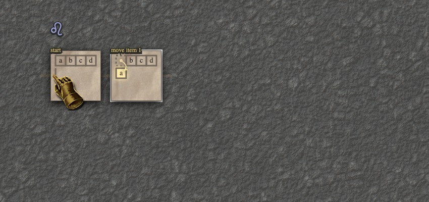
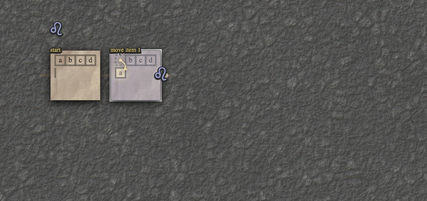
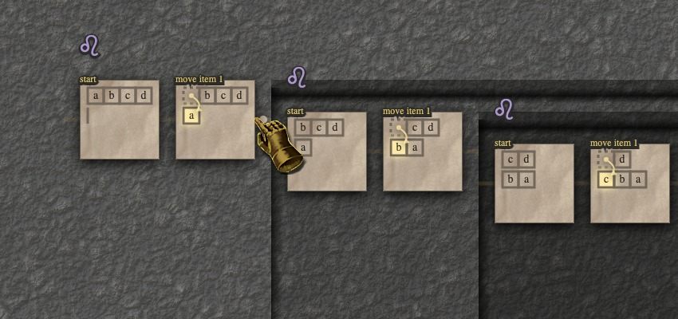

Droste's Lair is an unusual programming environment for building and counting mathematical structures, built in a two-week sprint. In Droste's Lair, the user manipulates mathematical structures through direct interactions: dropping dominoes on chessboards and dragging items between lists. The system's power comes from two forms of abstraction on top of this foundation: an "amb" mechanism that allows strands of execution to branch from one another, and a procedure-calling mechanism that enables recursion.
Also, Droste's Lair is a swords-and-sorcery-style point-and-click adventure game. (Sort of.)
Walkthrough
To get you up to speed with the gameplay of Droste's Lair, we'll take you on three quick jaunts into the caverns. We invite you to join us on this walkthrough – links to the game are available at the top and bottom of each journey so you can play along from the beginning or jump to the conclusion.
[TODO: put into box] (Pan by scrolling, or move the cursor with shift held. Undo is available with ctrl-z. Controls beyond these are kept deeply secret.)
The Reversal of Fortune
 Join from the start
Join from the start
A piece of parchment is against the dungeon wall, dimly lit by
flickering candelight. On it is a list:
[a, b, c, d].
Your teacher (who's also a cool wizard) has tasked you with reversing the elements of this list. You first try to do this by moving elements one by one. Clicking an element...

...picks it up, and reveals places it could go. You add it to the start of the second, currently empty list.

Your action has magically created a second square of parchment on the wall showing its effect. You could almost think of this as a "comic book", though the damp air and clink of chains in the distance make the situation anything but comical.
You could continue moving items one by one, and it wouldn't take long with a list this short. But you know that this is just training – sooner than you would like, you will face far greater foes. Moving items by hand, you'd only make it through a handful of items before being knocked out by some orcish cudgel. You need a way to automate these motions, a sorceror's apprentise of sorts.
The spell to cast has been with you the whole time, in the top-left: ♌︎. This sigil marks the script you are writing. With it, you can take what you've done so far, and cast it again, as a spell of its own.
With some trepidation (you're playing with recursion, after all!), you grab the sigil and cast it onto the latest square...

Your trepidation was called for. The effect of your spell is simply astonishing.

Portals into the wall have opened up, deep holes with deeper holes beyond. Inside each hole the sigil ♌︎ does its work. So each begins with the "start" parchment, and then has a "move item 1" parchment, just like the script outside the hole. But each starts with the outcome of the previous hole. So while the top level moves an "a", the next level moves a "b", and so on.
Where will this madness end?
At the bottom, in a fateful encounter with the eldrich consequences of your sigilic incantation: the base case.
You were never far from it. A short pan takes you over to the deepest hole, four levels below the surface.
In this deepest level, the first list has been exhasted. All items have been moved to the second list, in reverse order. This is great progress, but we're not done yet. Though our answer lurks in the depths of the the recursive holes, nothing is coming out to the surface. Yet.
The problem is that our parchment is getting stuck. The spirits of the parchment call out to us, through the dark mark of the beast [TODO: nah]. They're telling us: "[TODO modern error] you told us to move item 1 from the first list, but the first list is empty!". We know that, actually, the first list being empty isn't a problem at all – it just means that we are ready to call our answer back from the world of spirits. So we guide the parchment along by giving it an escape route. Clicking the mark of the beast creates one.
The escape route guides the parchment from the deepest level, where it ran into the obstacle of the empty list. At each higher level, the escape route is available, but the parchment doesn't take it, since it can happily proceed through the item movement and the recursive call. At last, we have a final answer on the far right. Our strange recipe is complete. We are ready to face far larger lists, and the monstrous beings that might bring them to us with nefarious intent.
Witness the conclusion
The Everbranching
Join from the start
...
Witness the conclusion
The Enumeration
Join from the start
...
Witness the conclusion
Exegesis (a.k.a. Discussion & Future Work)
Now that you've returned from your travails in the caverns, we'd like to tell you a bit about how Droste's Lair came to be. Grab a mug of spiced mead and take a seat.
Hi! We're Elliot and Josh. We met earlier this year through Internet circles like Ink & Switch. We discovered that we shared a lot of interests, especially around visualizing math. So we decided to embark on a little project together which ended up taking about two weeks.
We took the tight time-boxing of our project as an excuse to be indulgent and follow our whims. Droste's Lair is definitely an artistic investigation. It might also be a research project. We feel great about where it ended up. It's a genuinely weird little creation that combines some of our long-held principles with some out-on-a-limb experiments. It was really fun to make and it may even be fun to play with. We're not sure what it's good for, exactly, but we're fine with that.
For the rest of this "exegesis", we'll talk about the ideas that braided together to form Droste's Lair, some tensions we thought through, and some open questions that remain.
Programming model & origins thereof
This project fits into a lineage of projects that co-design an underlying programming model with a visual interface for viewing and interacting with that model. Of course we draw on ideas from traditional programming languages, but always while asking "what does this look like?" and "how does it feel to edit this?".
We were influenced by a few prior projects in this vein. Josh was interested in revisiting an old idea: a live-programming interface for building trees to solve combinatorial counting problems. His original prototype, called "Construct 'n' Count", adopted a functional-programming structure where each level of a branching tree acted like a "map" operation, defining a new variable that could be referred to deeper in the tree.
Marcel Goethals' much more recent Subsequently prototype offered an exciting alternative to this functional nested-scope vibe. In Subsequently, each comic pane contains the full state of the world at a point in time. You act directly on a pane's contents. There are no variables buried in some other pane; everything you need is right where you are. Subsequently also demonstrated that some processes (like picking elements out of arrays) became simpler and more intuitive if presented as imperative processes which mutate a world state, rather than as functional processes.
Subsequently's lack of "spooky action at a distance" and its imperative model felt appealing to us. They added up to a physical feeling that seemed appropriate for a live, interactive, visual programming system. Also, they were weird by conventional CS standards, which is always a good sign.
In order to extend the Subseqently model to work for Construct-'n'-Count-style counting problems, we had to add branching. Sure, Subsequently has conditional branches, as shown in the shot above, but we needed unconditional branches – branches that are all taken simultaneously, splitting execution into parallel universes. This sounds fancy, but it's straightforward to build. It is also well-trodden ground in computer science, also known as "amb" or "the list monad" or "nondeterminism". Admittedly, it's less common to see this kind of thing in an imperative environment like Droste's Lair, which is exciting.
TODO: illustration/visual?: BRANCHING COMPUTATION + SUBSEQUENTLY potion brew
The Subsequently-plus-branching potion we brewed up was enough to cover some simple counting problems. But some of the most interesting counting problems were still out of our grasp. These were the ones involving recursion: where counting possibilities for a larger structure involves splitting it into pieces, counting possibilities for each piece, and then recombining the possibilities of the pieces into possibilities for the whole. In the walkthrough, we showed how to use recursion to count ways to cover a checkerboard with dominoes. We were actually originally motivated by a more complicated question: counting paths on the fractal Sierpinski graph (also known as the Hanoi graph, since it maps out states in the Towers of Hanoi puzzle).
Aside from the applicability of recursion to counting problems, we were also just plain curious about how to make recursive structures comprehensible in a visual programming interface. (Elliot in particular has been investigating this strand for some time.)
With that, we had (& you now have) the basic formula for Droste's Lair's programming model:
- Subsequently-style imperative flowcharts
- ... plus branching paths
- ... plus recursion.
That's basically it, as long as you ignore (as we do for the moment) that Droste's Lair is also a point-and-click adventure game.
Branching
Droste's Lair provides two ways to produce branching computation on a panel:
- invoking multiple actions or procedures, or
- invoking an action or procedure that has multiple outputs.
When multiple distinct actions are invoked on a panel, they are shown branching from it (1). But when a single action or procedure has multiple outputs, we group those outputs into a stack of panels in the interface (2). It would have alternatively been possible to not group those outputs and to instead display them as branching paths.
There's a tradeoff between stacks and branches. The stack visualization we chose keeps the interface closer to the structure of an underlying flowchart: each action added by the user is depicted in one place. If "move any item" and actions like it instead produced branches in the interface, the interface would show the run-time trace of the program with higher fidelity, while more indirectly matching the underlying program.
This tension between highlighting static and dynamic structures is common when building live-programming systems. The dynamic execution of a program is an "unfolding" (by loops / calls) and "slicing" (by conditionals) of the program's static specification. It is challenging to show both static and dynamic layers at once.
But there are techniques that can help. Thoughtful visual design can go a long way. And, lucky for us, computers are interactive, so we can use interactive techniques too. In our case, we could let users switch between stacked and branched views as they please, or let them hover over a panel in a stack to see up- & downstream paths highlighted.
Recursion
Subsequently doesn't have recursion. To loop in Subsequently, you make an arrow from a step back to a previous step, essentially a "goto". Although this may condemn Marcel to a life of Dijkstra-haunting, it is honestly a pretty great way to loop, for a certain range of situations.
Some of the problems we wanted our system to handle seemed to lie outside this range, like the Sierpinski problem alluded to earlier. We knew there was good reason to resist whole-hog recursion, which is notoriously difficult to learn and work with, especially for those who aren't committed programmers. So we spent some time sketching to see if we could find an alternative to recursion that gave us the expressivity we wanted while fitting better into Subsequently's model.
In the end, we couldn't make anything work, and we went for fairly traditional recursion. We still feel there could be something interesting down this road. For instance, we spent some time thinking about what it would mean for a flowchart arrow to flow not out of an entire panel of a flowchart, but out of a piece of a panel. In our imagination, this could let a flowchart express the "divide-and-conquer" structure of a recursion. (One way to look at this: Flowchart arrows roughly correspond to tail-recursive calls. What we have here suggests a gentle loosening of this constraint to allow making multiple simultaneous tail-recursive calls that commute with each other because they operate on different parts of a structure.)
Putting wild alternatives aside, it was now our job to bring recursive calls (procedure calls in general) into the Subsequently model. In Subsequently, an action is represented as a comic panel that shows a picture of the world after the action, annotated with graphics that illustrate the action itself and descriptive text above the panel.
We took this design and extended it to our depiction of procedure calls. Calls in our system are represented as a hole containing the body of the called procedure followed by an "after the 'procedure call' action" panel.
Visually representing a call as a physical hole in the cobbled floor of the editor was inspired by metaphors of "depth" in recursion, and by the spooky, disorienting feeling of crawling deeper and deeper into caves and/or recursive functions.
>[aside: During a playtest, the player referred to a procedure
call sigil as a "label", seemingly referencing labels for
gotos/jumps]
In Droste's Lair, you can call a procedure on an entire panel or on a piece of a panel's contents that you select.
A note on how we visualized panel contents inside of holes: The most straightforward move would have been to show a called procedure operating only on the piece it was given, without any reference on the parchments to the larger whole they came from. But we reckoned that doing this would give up a lot of the physical, "object-permanent" feeling that we were striving for in our design. Passing into and out of procedure calls would require reorientation. To maintain the feeling of grounding we wanted, we instead chose to always show parts in the context of the whole, with a color-coded outline to show what part is actively focused by the procedure call and with the rest of the whole faded out.
(We maintain a conceptual color scheme throughout Droste's Lair's interface: yellow for actions, purple for procedures & calls, and red for trouble.)
Although we've tried in this project to visualize recursion as concretely and understandably as possible, building a recursive procedure is still an immensely "programmer-brained" activity. It won't feel natural to most people, even with our visualizations. But we aren't ready to give up on recursion yet! What could we do to make building recursion in our system less programmer-brained? Maybe users could start by building concrete trees by hand, and then our system could help them build recursive functions to match these?

Conditionals
Our design naturally diverged from Subsequently's when it came to flow control. We were looking for ways to make recursion less "programmer-brained"; we gravitated towards letting the user do whatever they wanted, and then letting them handle the ensuing errors as a post-hoc reaction to the situation.
Leaving behind traditional, if-then-style conditionals opened up a large space of designs. We went through several iterations of error handling, during both the initial design process and early implementation. The first design that worked for all our examples was allowing the user to attach an error handler panel to any other panel as a "catch" for that panel's action. In the end we landed on a more general mechanism: attaching an "escape" panel for when all possible actions from a panel result in error.
We don't have much confidence that this is the "right" way to handle errors or other conditions in a system like this. More exploration is needed!
Juice & Aesthetics
So far in this exegesis, we haven't acknowledged the dragon in the room: Droste's Lair isn't just a visual programming system. It's also a swords-and-sorcery-style point-and-click adventure game. Kind of... Maybe not really, but it's certainly inspired by the aesthetics and design of those games.
This strange decision came from our hankering to dip our toes into Juice (a term from game development). Droste's Lair may not be the juiciest thing you've encountered. But we're used to making 0%-juice programming systems, so this is a big step into the juice for us.
A theme in our discussions, within this project and without, has been about our values around the usefulness of systems we make. Juice and aesthetics change how people perceive the usefulness of a system, and they change who the system appeals to. If we are trying to make programming appealing to non-programmers, maybe we need to consider getting juicy?
When showing the project to people, we got feedback that the skeumorphic visuals helped them understand the recursion. We also found that animations helped us understand interactions.
Really though, we were inspired by Andrew Blinn's nool, which suggested a whole world of juicy possibilities for programming interfaces. So we got juicy for fun... It was fun! The craft of juice was a part of what made our collaboration a joyful experience.
Even More Future Directions
We've already highlighted some limitations & open questions in the discussion above. But here are some more!
- Mixing microworlds: Why can't I drag a card suit into the domino grid? Why can't I place a domino in a list? These questions, although seemingly simple, fling open the pandora's box of fundamental questions of composition and foundations of representations in our system. It's hard to know where to start!
- Scaling: For this prototype, we've stuck to small toy examples – neither the data nor the flow charts get very large. When they do, the way we visualize things begins to break down. This dovetails with a common critique of visual programming – a failure to scale to larger situations. But we're not worrying much yet. Future work taking on scaling will have so many techniques to draw from! Expanding and collapsing, minimaps, outline views, more compact graphic design, and on and on. We've already dipped our toes into this space with the recursion-depth filter we mentioned in [TODO: third walkthrough example].
- On Ramp: opens up questions of the possibility of going from concrete to abstract. Also what about having a narrative walk through in the game? A level progression? [TODO: refine]
- Representation of action: Following Subsequently's example, we've added visual representation of action itself to Droste's Lair. Rather than just seeing the states of the world before and after an action, annotations are added to the state to show what's happened. There are at least four hypothetical views relevant to an action: a "before" view, an "after" view, an annotated view of "before" showing what is about to happen, and an annotated view of "after" showing what just happened. In our current system, we focus on the annotated view of "after". Is this the best focus to have? Are there ways to include more views, or to allow moving between views? Lots of interesting questions here!
- What do we do with it: We built Droste's Lair as a short experiment. We are, honestly, pretty delighted with it. But some may wonder: what good is this thing anyway? We wonder that too, though we'd phrase it less confrontationally. Could this project grow into an educational tool? A mathematical laboratory? An honest-to-goodness game? A programming environment for data integration workflows? Hmmmm.
Thanks to...
- Marcel Goethels, for the lovely inspiration of Subsequently.
- Ink & Switch and the Pacific Programming Interfaces Confab, for motivating us with venues for sharing.
- Ivan Reese, for play-testing & insightful feedback
- Andrew Blinn, for championing juice
- Rocky430 for inspiring conversation with Elliot about Aesthetics such as Frutiger Aero and PSX
- Nick Joliat, for fractal inspiration.
- Todd Matthews, for the brilliant name.